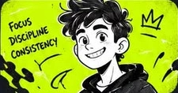

Video Editing
Story-led YouTube edits, music cuts and cinematic personal films.
Heyyy! ↘

Video Editor • Graphic Designer • Motion Explorer
Open to creative opportunities
● Made to move. Built to tell a story.
01 / IN MOTION
A quick glimpse of my world and my love for bringing stories to life.
SHOWREEL 9:16 / VERTICAL
Personal experiments. Concept work. Creative possibilities.
Cut & tell Storytelling · Pacing · Audio sync · Color correction · Short-form edits
Design & move Typography · Posters · Thumbnails · Layout · Keyframes · Basic compositing

I'm Shivam, an aspiring video editor and graphic designer. I turn little ideas into playful visuals, thoughtful edits and stories that feel alive.
I'm building my craft through personal projects, experimenting with motion and learning something new with every frame.
Story-led YouTube edits, music cuts and cinematic personal films.
Vertical stories with sharp pacing, clear captions and rhythmic cuts.
Posters, thumbnails and social graphics built around one strong idea.
Animated titles, simple keyframe sequences and expressive transitions.
Find the message, audience and feeling.
Collect references. Sketch. Try unexpected directions.
Shape the edit, build the design and bring it to life.
Listen to feedback. Polish the details. Make it click.
FROM FIRST THOUGHT TO FINAL FRAME
One message. One feeling. Start with the story.
Fresh perspective. Open to feedback. Care in every frame.
FIND ME ONLINE